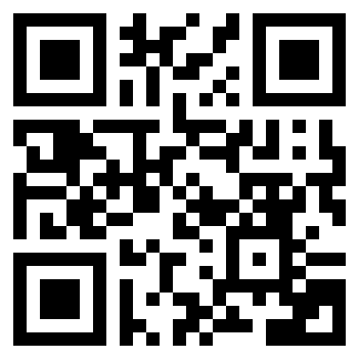

Support the Project
Thank You for Your Support
Jika project ini bermanfaat bagi kamu, kamu dapat memberikan dukungan melalui QRIS. Setiap dukungan, sekecil apa pun, sangat berarti dan membantu project ini terus berkembang.
Donate via QRIS
Scan QRIS di bawah menggunakan aplikasi pembayaran pilihanmu.

Buka aplikasi pembayaran kamu, pilih fitur scan QR, lalu arahkan kamera ke QRIS di atas.
Tidak ada jumlah minimum untuk berdonasi. Berikan sesuai keinginan dan kemampuan kamu.
Every contribution matters.
Terima kasih sudah mendukung dan menjadi bagian dari perjalanan project ini.